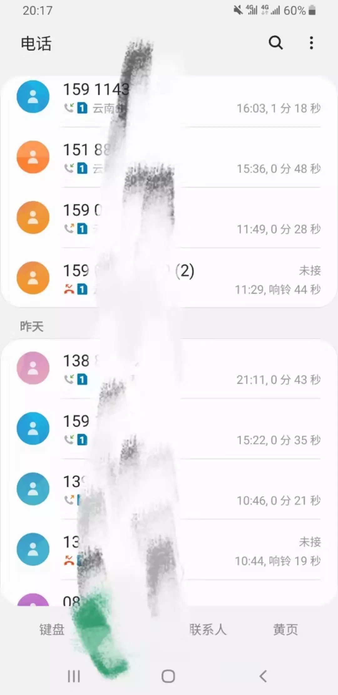

在北京郊区，“新村民”的我差点回不了家 | 三明治
原文链接 备份链接 文 | 三明治016 车子缓缓驶近村口。 一根彩带揉搓成的细长绳子，挂在门口两个石狮子上，挡住了进村的路。 因为新型冠状病毒影响，正月初七这天，往年返京最高峰的日子，北京多个村庄、多个社区却相继曝出拒绝租客进门的规 …

本文作者是一名报社的实习记者，得知肺炎疫情严重之时，她决定回到家乡武汉，跟家人在一起。她日夜感受病毒是如何改变着、影响着武汉人的生活，并决定记录下周围发生的故事。在今天这篇“武汉日常”每日书中，她采访了一位朋友，他的处境或许是当下某些群体共同面临的难题。
作者：糖吉可得
坐标：武汉
职业：记者
我有一位在武汉工作、回乡后被当成瘟神的朋友，我跟他聊了聊，以下是他的自述：
1月15日，我从武汉回家乡。当时疫情也没有很严重，回乡后大家也挺热情，亲朋好友常叫我出去吃饭唱歌。
但到了1月20日，新闻爆炸增加，官方证实这病可人传人，我的朋友立刻变了脸，再不跟我玩儿了。大家组织活动会在同学群、发小群里艾特所有人，除了我。
开始我很失落，但很快理解了他们，毕竟我从武汉回来，正常人都会怕吧。于是我就在家中自我隔离。
两个星期后，也就是1月29日，我以为我的隔离期结束了。结果当天下午4点，我母亲突然接到一个单位里的人打来的电话（我父母都在政府单位上班），说因为上级需要，在我家门口贴了一个宣传广告。
她跑出去看，发现我家门边的大白墙上贴了个黄色牌子，上面有五个红色大字，“居家隔离户”。这五个字下还有一行小字，“禁止本户人员随意外出”，甚至还留有举报电话——如果我们出门，别人可以打这个电话举报我们。

我妈顿时气炸，赶紧打电话给人，“为什么要贴条？”
那人回答，上面领导要求的，每个家中有从武汉回来的人都要贴。
我也生气，我说我15日回来的，明明已经过了隔离期。
他说，不是按照你自己的隔离期来算的，要以我们的隔离期来算。
大概十天前（1月21日），我父母的单位要求他俩填一个类似是否有湖北人接触史的信息表，并放话说，需如实填写，否则会有处罚云云。我爸妈就将我从武汉回来、什么时候回来的、身份证号码、电话等信息全部填了交上去。
三天后的中午，突然有人哐哐地敲我的家门。当时我正坐着自己的房间里玩手机，以为是哪位亲戚上门拜年来了，根本没理会。
结果我父母敲我房门，说是有人上门来给我做体检。我开门一看，两个穿着防护服带着N95口罩的人在客厅等候，另一个在门外没进来。
其中一个人拿着一张写得密密麻麻的表，边问我边填，坐哪一趟高铁、哪一节车厢、哪一个座位回来的，回来后又去了哪些地方，和谁见过面等等。
之后他俩给我体温、抽血，走前嘱咐我，你这几天就在家里好好休息，别出门。
接来下的每天，我，我爸，我妈都能接到来自不同部门的至少五个电话。上午9:00到11:00两三个，下午3:00到5:00又是两三个，盘问我们的身体情况。

在他们眼中，我们的隔离期开始于上门体检那天，我们至少要等到2月7日才可以真正结束隔离期。
于是我们根本出不了小区门。楼下保安谁也不拦，就拦我们家，说你要买什么我们帮你买，但你就是不可以出门。
这些我尽量理解，但是贴条子这个事，真的过分了——细思恐极。
当时我想给这个牌子拍照取证的时候，我们楼上一位正准备出门还在下楼的阿姨，看见我站在门口，立马一个转身跑回家把门关了起来。
我拍完照，回到家，一关上门，又听见她开门的声音。
这条子再这么贴着，我们家个个都会被当作瘟神。我就又打电话给那贴条子的人，“之前有人来我们家，给我量了体温，我们家正常得很，你这是做什么？”
他说，这是上面要求的，上级会来检查的。
我说，“你说的话我都录音了，我也保留了照片证据。我有很多媒体记者朋友，我把证据都发给他们了，正准备曝光。你们自己斟酌利弊。”
隔了十几分钟，他又打了一个电话给我，“那你看这件事情怎么办？”
我说，你们在没有告知我的情况下贴这个条，给我的身心、我父母的名誉造成了伤害，我要求负责人来我们家道歉且全程录像，当面撕牌子，并向左邻右舍解释清楚。
他说，他会向领导反映。
我父母是政府工作人员，担心上级会来威胁他们，就说也别那么过激，让人把这个牌子撕走就算了。
不过第二天，那人确实带了几个领导来我们家，和我们道歉，也把门前的牌子给撕了。
几天下来，我感觉我家乡的人对从湖北尤其是从武汉回来的人，根本不关心，也根本不同情。
我的家乡是旅游城市，我很多朋友都在朋友圈里发，“拜托武汉人不要来我们这里旅游。”

我回家后，很多亲戚都电话我爸，啥也不说，上来就问，“你儿子在哪里？你儿子有事吗？”但当我不停跟他们说一定要买口罩、戴口罩时，他们又不怎么听。
我们小区的大爷大妈也是。他们总是不戴口罩、裸奔一样地聚在树下打牌下棋，但一听说我从武汉回来的，就躲我躲得远远的。
一边给武汉加油，一边搞歧视，我真觉得这些人挺分裂的。


《“冒昧问一句，你这次回国没去过武汉吧？” | 美国南部的“肺炎”日记》

原文链接 备份链接 文 | 三明治016 车子缓缓驶近村口。 一根彩带揉搓成的细长绳子，挂在门口两个石狮子上，挡住了进村的路。 因为新型冠状病毒影响，正月初七这天，往年返京最高峰的日子，北京多个村庄、多个社区却相继曝出拒绝租客进门的规 …
原文链接 备份链接 🎧 点击上方图片，跳转「故事FM」小程序，收听真人讲述。记得添加「我的小程序」，一键收听全部故事哟！ 故事FM 前几天采访的武汉人，都是目前身在武汉的武汉人。但我们知道，现在散布在全国各地的武汉人，甚至湖北人，都在主动 …
原文链接 备份链接 非常时期，武汉成了全国人民挂念、祈福的城市。封城后，武汉人民的真实生活是什么样？ 正和岛自1月26日起特别推出《叶青：我在武汉疫区的第N天》专栏。叶青是一位定居武汉40年的市民，也是一名学者和官员。接下来的一段时间，他 …
原文链接 备份链接 童言是生活在新加坡的三明治专栏作者。自1月23日确诊第一例“新型冠状病毒肺炎”病例以来，目前新加坡已确诊18个病例，在海外确诊数据中排名第三，仅次于日本、泰国。 这场“肺炎”疫情牵动着许多在海外中国人的心绪。华人群体 …
原文链接 备份链接 大家好，我是田静。 疫情爆发最严重的那几天，我家的亲戚被隔离了。 听到消息后家里人都吓得不轻。原来是亲戚小龙春节前去过武汉一晚，回来后就发烧、胸闷、呼吸困难，在老家农村，只能监管，不能诊治。 每天在家隔离，实时向当地村 …